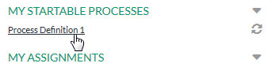
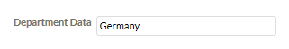
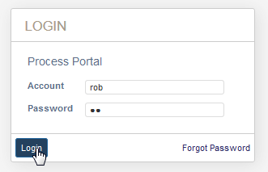
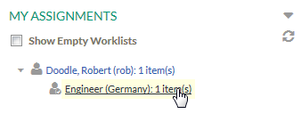
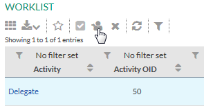
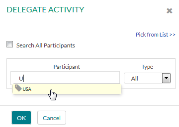
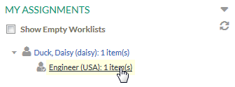
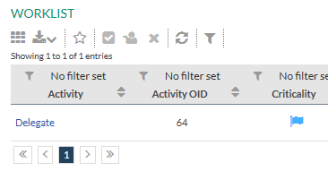

To delegate an activity from one department to another, the delegation process is invoked from a performer in the starting department. The activity will then be available in the worklist of the users who are performers of the activity in the target department. The following steps lead us through this process:
Now we start the manual trigger of the process:

Now the subsequent activity Set Departments is called, which also has the administrator as performer. An entry field opens to retrieve the department data.
.
The data value is read as department data and thus, the next activity goes to the worklist of its performer in the department Germany, which is in our case the user Doodle, Robert.
Log out of the Stardust Portal and login again as user Doodle, Robert.

Figure: Login as user Robert Doodle.
In the My Assignments part of the Workflow Perspective, you find an item in the worklist, assigned to the role Engineer in the department Germany:

Figure: Provided Worklist Item
Click the worklist item to open the worklist view. Select the Delegate activity in the table and click the Delegate icon in the toolbar.

Figure: Start the Delegate Action.
The delegation dialog opens. In the Participant entry field enter U. Now all participants starting with the letter U are displayed in a list below the entry field. In our case this is the department USA only. Select USA and click OK.

Figure: Select department USA.
Please refer to chapter Delegating Activities of the End User Handbook for detailed information on the Delegation dialog.
Now the activity is delegated to the organization associated with the department USA, which Frank Cityman is the team leader of.
After the activity is delegated to another department, it goes to the worklist of the performers in this department. Now we log out of the Stardust Portal and login as user Daisy Duck, who is assigned to the Engineer role of the organization NationDivision in the department USA.
In the Workflow Execution perspective, expand the My Assignments section. An item is available for the Engineer role in department USA.

Figure: Start the activity item.
Click the item entry to open the worklist. Now Daisy Duck is able to activate the delegated activity.

Figure: Worklist available for user Daisy Duck.